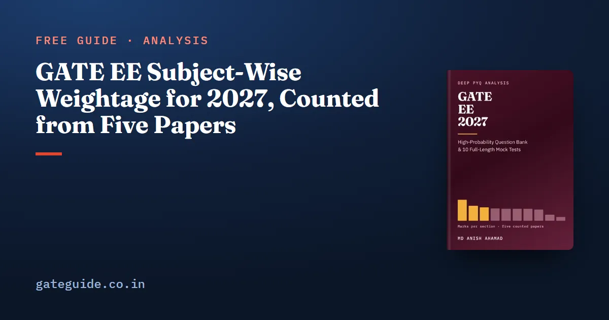

GATE EE Subject-Wise Weightage for 2027, Counted from Five Papers

Across the five most recent GATE Electrical Engineering papers, 2022 to 2026, Engineering Mathematics is the largest technical section at a mean of 14.8 marks, and it was the largest in every single paper. Power Systems follows at 10.6 and Power Electronics at 9.6. General Aptitude is exactly 15 marks every time.
In this guide
Those figures are counts, not a compiled table: 325 questions and 500 marks, each placed in a section of the 2027 syllabus and checked against that year's official answer key. This guide gives the mean and the range for every section, and explains why the range is the number to plan around.
Key takeaways
- Engineering Mathematics (14.8, range 13–18) topped the technical table in all five papers. Nothing else in the record is that stable.
- Below it, six sections sit between 8.2 and 9.6 marks. Read them as a group of near-equals, not a ranking.
- Machines, Power Systems and Power Electronics together average 28.6 marks, a third of the technical paper.
- Consecutive papers differ by 16 to 24 technical marks out of 85. The range matters more than the mean.
- The 2027 syllabus is the 2026 syllabus with one spelling corrected, so all five papers count as evidence.
The record behind the numbers
Electrical Engineering is set as one paper a year, so a year and a question number identify a question completely. The five counted papers were organised by IIT Kharagpur (2022), IIT Kanpur (2023), IISc Bengaluru (2024), IIT Roorkee (2025) and IIT Guwahati (2026).
Each question was read from the official paper. Its marks and type (MCQ, MSQ or NAT) were taken from the official answer key, not from the paper's layout. It was then placed in a section of the 2027 syllabus, the one you will sit. A count was accepted only if it closed: 65 questions, 100 marks, 30 one-mark and 35 two-mark questions, General Aptitude at 15 and the technical sections at 85. All five close.
Four questions were marked "marks to all" in the official keys: GATE 2023, Q.43; GATE 2024, Q.7; GATE 2024, Q.18; and GATE 2026, Q.58. Each is counted in the section it was set in, because the paper awarded its marks.
The counted table
Mean marks per paper across all five, with the lowest and highest single-paper figures and the share of the 425 technical marks.
| Section | Mean | Lowest | Highest | Range | Share of technical marks |
|---|---|---|---|---|---|
| Engineering Mathematics | 14.8 | 13 | 18 | 5 | 17.4% |
| Power Systems | 10.6 | 9 | 12 | 3 | 12.5% |
| Power Electronics | 9.6 | 6 | 11 | 5 | 11.3% |
| Signals and Systems | 8.8 | 4 | 11 | 7 | 10.4% |
| Electric Circuits | 8.6 | 7 | 11 | 4 | 10.1% |
| Analog and Digital Electronics | 8.6 | 7 | 10 | 3 | 10.1% |
| Electrical Machines | 8.4 | 6 | 10 | 4 | 9.9% |
| Control Systems | 8.2 | 6 | 9 | 3 | 9.6% |
| Electromagnetic Fields | 4.4 | 3 | 6 | 3 | 5.2% |
| Electrical and Electronic Measurements | 2.6 | 1 | 5 | 4 | 3.1% |
| Material the 2027 syllabus does not name | 0.4 | 0 | 2 | 2 | 0.5% |
| General Aptitude | 15.0 | 15 | 15 | 0 | — |
The bottom technical row is one question: GATE 2023, Q.57, on the flags a microcontroller sets after an 8-bit addition. Microcontrollers are not named in the 2027 syllabus, so its 2 marks sit outside every section. That is the whole of the out-of-syllabus material in five papers.
The top is fixed, the second place is not
Engineering Mathematics was the largest technical section in 2022, 2023, 2024, 2025 and 2026, at 15, 13, 13, 15 and 18 marks. The section in second place changed every year: Power Electronics in 2022 (11), Signals and Systems in 2023 (11), Power Systems in 2024 (12), Power Electronics again in 2025 (10) and Power Systems in 2026 (12).
That is why the middle of the table should be read as a band. Six sections average between 8.2 and 9.6 marks, and a single paper can reorder them completely. Ordering your preparation as if Power Electronics were reliably worth a mark more than Control Systems reads more into five papers than they contain.
The bottom is clearer. Electromagnetic Fields and Measurements together average 7.0 marks and have never been above 8 between them. They are small, but neither was ever absent.
What the range tells you that the mean cannot
A mean of 8.8 is a paper nobody sat. What you sit is one draw from the range.
Signals and Systems has the widest range in the record, 4 to 11. It was 9, 11, 11 and 9 marks from 2022 to 2025, then 4 in 2026, with three questions. Control Systems also fell in 2026, to 6, so the two sections together dropped from 17–20 marks in the earlier papers to 10.
Power Electronics was 11, 6, 11, 10 and 10. The 2023 figure is the outlier; the other four papers agree within a mark.
Engineering Mathematics reached 18 in 2026, more than 21 per cent of the technical paper.
Setting each paper against each other paper and adding up the section-by-section differences shows how much the blueprint moves. Consecutive papers differ by 20, 16, 16 and 24 marks out of 85, and the full spread across all ten pairs is 12 to 30. The 2026 paper is the least typical of the five: it differs from the other four by 26 marks on average, against 17 to 21.5 for each of the others. Building a plan from the latest paper alone means building it from the outlier.
No technical section moved in the same direction in all four steps from 2022 to 2026. Five papers show patterns, not trends, and nothing here predicts what the 2027 paper will do.
Where the count is a judgement
Electrical Engineering has wide borders between sections. A rectifier question can be Power Electronics or Analog Electronics; a generator inside a network can be Machines or Power Systems. Of the 275 technical questions, 42 could honestly sit in a second section, and they carry 67 marks. Each was placed by a stated rule, and the other candidate section was recorded.
Thirty of them were not settled by any rule and are counted at their lean. Moving all 28 of those that record a second section changes the means by this much:
| Section | As counted | With every lean moved |
|---|---|---|
| Engineering Mathematics | 14.8 | 14.8 |
| Electric Circuits | 8.6 | 10.8 |
| Power Systems | 10.6 | 9.2 |
| Power Electronics | 9.6 | 8.0 |
Engineering Mathematics does not move. Electric Circuits rises to second place, because wattmeter, diode-network and thyristor-commutation questions are circuit analysis in another section's clothing. The practical reading is that circuit analysis is worth more to you than its own row suggests. The GATE EE 2027 book prints all thirty judgement calls with the section each could have gone to, so you can redo the count your own way.
Practise each section in its own format
Pooled over five papers, the technical questions split 148 MCQ, 22 MSQ and 105 NAT. No section is average:
- Power Electronics set 17 of its 31 questions as NAT, and Electric Circuits 15 of 29. A NAT question gives you no options to work back from, and costs time on the on-screen calculator.
- Control Systems set only 6 of its 27 as NAT; 20 were multiple choice.
- Engineering Mathematics set 10 of the 22 MSQs in the record. Know each property with its condition.
The paper-level mix moves too: NAT fell from 28 questions in 2023 to 13 in 2026, and 2022 set no MSQ at all.
The 2027 syllabus keeps all five papers relevant
The 2027 EE syllabus, published by IIT Madras, was compared phrase by phrase with the 2026 one. No phrase was added, removed or reworded. The only change is a spelling, "Butterwoth" corrected to "Butterworth" in Analog and Digital Electronics. The 2024 and 2025 syllabi show no added, removed or reworded phrase against 2027 either.
So a 2027 candidate can use the 2022–2026 papers as they stand, setting aside the one microcontroller question. None of the five was set by IIT Madras; the organising institute guide explains what a change of institute does and does not mean. Confirm the syllabus on the official site before you finalise a plan.
How to use these numbers
- Engineering Mathematics first. It is the largest section in every paper, and no judgement in the count moves it.
- Then the power block. Machines, Power Systems and Power Electronics together are 24 to 31 marks a paper.
- Treat the six middle sections as near-equals, and give Electric Circuits extra weight because its methods carry questions counted elsewhere.
- Plan for the range. Signals and Systems has been 11 and has been 4.
- Do not leave General Aptitude to the end. It is 15 marks in every paper; the General Aptitude guide covers it.
This guide gives the means and ranges. The book prints the paper-by-paper table, breaks every section into topic groups with the question numbers behind each, and adds 264 practice questions across its subject chapters plus 10 full mock tests with worked solutions.
Frequently asked questions
Which subject has the highest weightage in GATE Electrical Engineering?
Engineering Mathematics. Across the five counted papers, 2022 to 2026, it averages 14.8 marks and was the largest technical section in every one of them, ranging from 13 to 18 marks. Power Systems is second on the mean at 10.6, but the second place changed hands every year between Power Systems, Power Electronics and Signals and Systems.
How many marks is General Aptitude in the GATE EE paper?
Exactly 15 marks in all five counted papers, from ten questions, five worth one mark and five worth two. It is the only block of the paper that did not move at all between 2022 and 2026, and it is worth more than any technical section has averaged, Engineering Mathematics included.
Has the GATE EE syllabus changed for 2027?
Only by one spelling. Compared phrase by phrase with the 2026 document, the 2027 EE syllabus adds nothing, removes nothing and rewords nothing. The single change is in Analog and Digital Electronics, where Butterwoth is corrected to Butterworth. That stability is why all five recent papers are usable evidence for 2027.
Can I skip Electrical and Electronic Measurements for GATE EE?
It is the smallest section, averaging 2.6 marks with a range of 1 to 5, so it should come last in your order. But it appeared in all five papers, and five of its eight counted questions were worth two marks. Wattmeter readings and the Wheatstone bridge cover most of what has been asked, which makes it cheap to prepare.
Is the GATE EE weightage the same every year?
No. Setting each counted paper against each other and adding up the section-by-section differences gives 12 to 30 marks out of 85 technical marks. Signals and Systems has been 11 and has been 4. Engineering Mathematics staying on top is the most stable finding in the record.
Sources
- GATE 2027 official website (IIT Madras)
- GATE 2027 EE syllabus (IIT Madras)
- GATE past papers and answer keys archive (IIT Guwahati)
- GATE 2026 EE question paper (IIT Guwahati)
- GATE 2026 EE answer key (IIT Guwahati)
- GATE 2025 EE question paper (IIT Roorkee)
Dates, fees and the syllabus are set by the GATE 2027 organising institute and can change. Always confirm at gate2027.iitm.ac.in.